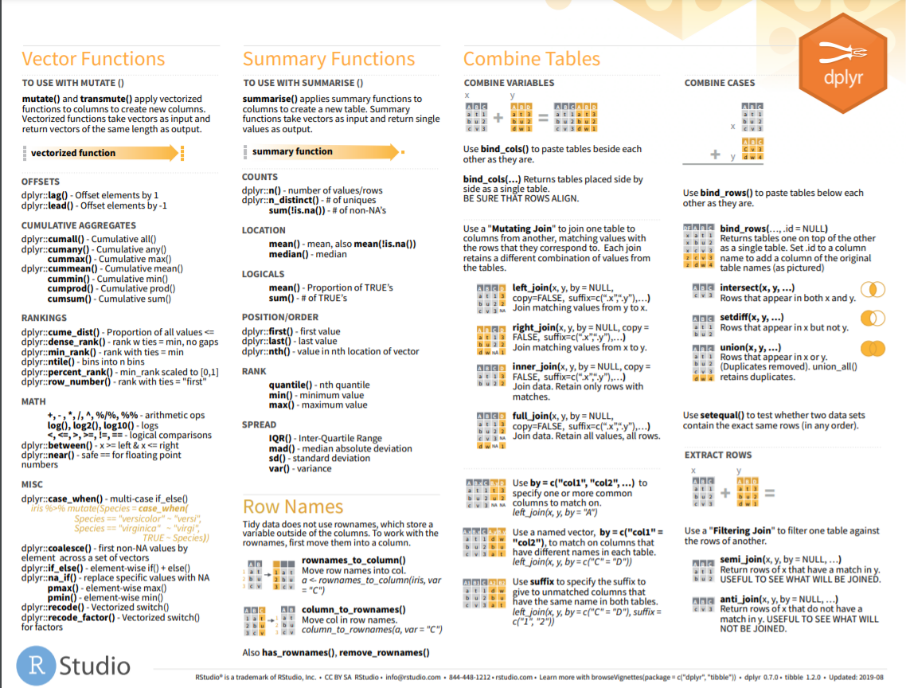

Chapter 2 Data Management using R
2.1 Basis System Seeting
2.1.1 Help and Packages
- Tools Global Options
getwd()setwd("C:/.../")
- Source: http://r-project.org
- Install and load Packages
install.packages()library()library(help="pwr")- Releasing loaded packages:
detach(package:pwr) remove.packages("pwr")- List all already installed packages:
library()
- Help system
- Opens the (web) links to the manuals.
help.start() - Access help for specific functions
?sqrthelp(sqrt)help("sqrt")
apropos("mean")returns a list of function names that contain the expression mean (functions displayed in the loaded packages.)help(glm, try.all.packages=T)searches in all installed packages and returns the names of these packages. The help page for a function in a package that has not yet been loaded can then be displayed using the package option.- Alternative
help(glm, package="stats") help.search("truncated")or??truncatedsearches for a specific word (here truncated) in the online help.RSiteSearch("truncated")searches help pages, vignettes and task views for the keyword “truncated”.
- Opens the (web) links to the manuals.
2.1.3 Basic Mathematische Operatoren & Funktionen
Figure 2.1: Basic Mathematische Operatoren & Funktionen A
Figure 2.2: Basic Mathematische Operatoren & Funktionen B
5 !=2+2
TRUE & FALSE
TRUE | FALSE
(4>= 3|5==6) & (4!=4)
FALSE || (2 !=3)
7%/%2
18%%3
Inf + Inf + 2
Inf - Inf + 2
5/0
x <- 1:7
(x > 2) && (x < 5)
(x > 2) | (x < 5)
(x > 2) || (x < 5)2.1.5 Objects in R
Vector: The c() function (for combine or concatenate) is used to define a vector. Examples:
x <- c(1,2,3,4); x
y <- c(4,3,2,1); y
z <- c(1:4); z
w <- c(4:1); w
u <- seq(1,4); u
a <- c("Einführung","in R"); a
seq(from=2,to=6,by=3)
seq(4,5,length=10)- Data.Frame
- List:
2.1.6 Function in R
my.fun <- function(x1 ,x2) (x1 + x2)/2 # order
my.fun <- function(x1 ,x2){
(x1 + x2)/2
} # order
my.fun <- function(x1 ,x2){
y <- (x1 + x2)/2
y
}# order
my.fun <- function(x1 ,x2){
y <- (x1 + x2)/2
return(y)
}
# Calling the function:
my.fun(100, 200) # order
my.fun(x1 = 100, x2 = 200) # order
my.fun(x2 = 200, x1 = 100)2.2 Load Data


2.2.2 Import csv data
The Scan function returns a list or vector. This makes the scanning function less useful for entering “rectangular” data
mydata1 <- read.csv("~/Desktop/SASUniversityEdition/myfolders/Daten/CRP.csv",
sep=";",
header=TRUE)
mydata2 <- scan("~/Desktop/SASUniversityEdition/myfolders/Daten/CRP.csv",
sep=";",
what = list("integer","numeric"))2.2.3 Import txt data
test.semi <- read.table("https://stats.idre.ucla.edu/wp-content/uploads/2016/02/testsemicolon.txt", header=T, sep=";")
print(test.semi)
pfad <- "~/Desktop/SASUniversityEdition/myfolders/Daten"
mydata3 <- read.table(file.path(pfad, "CRP.csv"),
header=TRUE, sep=";", dec = ",", skip=9) 2.2.4 Import excel data
- read.xlsx slow for large data sets (worksheet with more than 100 000 cells)
- read.xlsx2 is faster on big files compared to read.xlsx function.
## install.packages("xlsx")
library("xlsx")
read.xlsx(file, sheetIndex, header=TRUE, colClasses=NA)
read.xlsx2(file, sheetIndex, header=TRUE, colClasses="character")2.2.5 Import stata data
library(foreign)
test.stata <- read.dta("https://stats.idre.ucla.edu/stat/data/test.dta")
print(test.stata)2.2.6 Import SAS data
library(sas7bdat)
data <- read.sas7bdat("~/Desktop/SASUniversityEdition/myfolders/Daten/uis.sas7bdat")
View(data)2.2.8 Save and write objective in R
2.2.8.1 Save as R-Datei
path <- "C:/Users/zbai/Projects/00_Project/00 PMS_VENUS/VENUS_CIR/01_Datasets"
saveRDS(save_objective, file = file.path(path, "dataname.rds" ))
save_objective <- readRDS(file = file.path(path, "dataname.rds" ))2.2.8.2 write.table and write.csv
# quote：字符串是否使用引号表示，默认为TRUE，也就是使用引号表示
# row.names：是否导出行序号，默认为TRUE，也就是导出行序号
# col.names：是否导出列名，默认为TRUE，也就是导出列名
# sep：分隔符，默认为空格（” “），也就是以空格为分割列
write.table (data ,file ="~/Desktop/f.csv", row.names = FALSE, col.names =FALSE, quote =FALSE)2.2.8.3 write.foreign
Save as SPSS- und SAS- Datei
library("foreign")
datafile <- tempfile()
codefile <- tempfile()
write.foreign(esoph, datafile, codefile, package="SAS")
file.show(datafile)
file.show(codefile)
unlink(datafile)
unlink(codefile)2.2.8.4 write.xlsx
# Write the first data set in a new workbook
write.xlsx(USArrests, file = "./01_Datasets/myworkbook.xlsx",
sheetName = "USA-ARRESTS", append = FALSE)
# Add a second data set in a new worksheet
write.xlsx(mtcars, file = "myworkbook.xlsx",
sheetName="MTCARS", append=TRUE)
# Add a third data set
write.xlsx(iris, file = "myworkbook.xlsx",
sheetName="IRIS", append=TRUE)2.2.9 Save the plot
File formats for exporting plots:
- pdf(“rplot.pdf”): pdf file
- png(“rplot.png”): png file
- jpeg(“rplot.jpg”): jpeg file
- postscript(“rplot.ps”): postscript file
- bmp(“rplot.bmp”): bmp file
- win.metafile(“rplot.wmf”): windows metafile
# 1. Open a pdf file
pdf("rplot.pdf")
# 2. Create a plot
plot(x = my_data$wt, y = my_data$mpg,
pch = 16, frame = FALSE,
xlab = "wt", ylab = "mpg", col = "#2E9FDF")
# 3. Close the pdf file
dev.off() 2.4 Package tidyr
2.4.1 CHEAT SHEET

Figure 2.5: Data Wrangling with dplyr and tidyr

Figure 2.6: Data Wrangling with dplyr and tidyr
2.4.2 Pivoting
- One variable might be spread across multiple columns.
- One observation might be scattered across multiple rows.
pivot_longer()pivot_wider()
## # A tibble: 3 × 3
## country `1999` `2000`
## <chr> <dbl> <dbl>
## 1 Afghanistan 745 2666
## 2 Brazil 37737 80488
## 3 China 212258 213766## # A tibble: 6 × 3
## country year cases
## <chr> <chr> <dbl>
## 1 Afghanistan 1999 745
## 2 Afghanistan 2000 2666
## 3 Brazil 1999 37737
## 4 Brazil 2000 80488
## 5 China 1999 212258
## 6 China 2000 213766## # A tibble: 12 × 4
## country year type count
## <chr> <dbl> <chr> <dbl>
## 1 Afghanistan 1999 cases 745
## 2 Afghanistan 1999 population 19987071
## 3 Afghanistan 2000 cases 2666
## 4 Afghanistan 2000 population 20595360
## 5 Brazil 1999 cases 37737
## 6 Brazil 1999 population 172006362
## 7 Brazil 2000 cases 80488
## 8 Brazil 2000 population 174504898
## 9 China 1999 cases 212258
## 10 China 1999 population 1272915272
## 11 China 2000 cases 213766
## 12 China 2000 population 1280428583## # A tibble: 6 × 4
## country year cases population
## <chr> <dbl> <dbl> <dbl>
## 1 Afghanistan 1999 745 19987071
## 2 Afghanistan 2000 2666 20595360
## 3 Brazil 1999 37737 172006362
## 4 Brazil 2000 80488 174504898
## 5 China 1999 212258 1272915272
## 6 China 2000 213766 1280428583## missing values
## last observation carried forward
treatment <- tribble(
~ person, ~ treatment, ~response,
"Derrick Whitmore", 1, 7,
NA, 2, 10,
NA, 3, 9,
"Katherine Burke", 1, 4
)
treatment %>%
fill(person)## # A tibble: 4 × 3
## person treatment response
## <chr> <dbl> <dbl>
## 1 Derrick Whitmore 1 7
## 2 Derrick Whitmore 2 10
## 3 Derrick Whitmore 3 9
## 4 Katherine Burke 1 42.4.3 gather and spread
## prepare data
olddata_wide <- read.table(header=TRUE, text='
subject sex control cond1 cond2
1 M 7.9 12.3 10.7
2 F 6.3 10.6 11.1
3 F 9.5 13.1 13.8
4 M 11.5 13.4 12.9
')
olddata_wide$subject <- factor(olddata_wide$subject)
olddata_long <- read.table(header=TRUE, text='
subject sex condition measurement
1 M control 7.9
1 M cond1 12.3
1 M cond2 10.7
2 F control 6.3
2 F cond1 10.6
2 F cond2 11.1
3 F control 9.5
3 F cond1 13.1
3 F cond2 13.8
4 M control 11.5
4 M cond1 13.4
4 M cond2 12.9
')
olddata_long$subject <- factor(olddata_long$subject)
## factor_key将新键列视为一个因子（而不是字符向量）
data_long <- gather(olddata_wide, condition, measurement, control:cond2, factor_key=TRUE)
##########################################################
# Äquivalent #
keycol <- "condition" #
valuecol <- "measurement" #
gathercols <- c("control", "cond1", "cond2") #
gather_(olddata_wide, keycol, valuecol, gathercols) ### subject sex condition measurement
## 1 1 M control 7.9
## 2 2 F control 6.3
## 3 3 F control 9.5
## 4 4 M control 11.5
## 5 1 M cond1 12.3
## 6 2 F cond1 10.6
## 7 3 F cond1 13.1
## 8 4 M cond1 13.4
## 9 1 M cond2 10.7
## 10 2 F cond2 11.1
## 11 3 F cond2 13.8
## 12 4 M cond2 12.9##########################################################
data_wide <- spread(data=olddata_long, key = condition, value = measurement, convert = T)
data_wide %>% str## 'data.frame': 4 obs. of 5 variables:
## $ subject: Factor w/ 4 levels "1","2","3","4": 1 2 3 4
## $ sex : chr "M" "F" "F" "M"
## $ cond1 : num 12.3 10.6 13.1 13.4
## $ cond2 : num 10.7 11.1 13.8 12.9
## $ control: num 7.9 6.3 9.5 11.52.4.4 separate and unite
## # A tibble: 6 × 3
## country year rate
## <chr> <dbl> <chr>
## 1 Afghanistan 1999 745/19987071
## 2 Afghanistan 2000 2666/20595360
## 3 Brazil 1999 37737/172006362
## 4 Brazil 2000 80488/174504898
## 5 China 1999 212258/1272915272
## 6 China 2000 213766/1280428583## # A tibble: 6 × 4
## country year cases population
## <chr> <dbl> <chr> <chr>
## 1 Afghanistan 1999 745 19987071
## 2 Afghanistan 2000 2666 20595360
## 3 Brazil 1999 37737 172006362
## 4 Brazil 2000 80488 174504898
## 5 China 1999 212258 1272915272
## 6 China 2000 213766 1280428583## # A tibble: 6 × 4
## country century year rate
## <chr> <chr> <chr> <chr>
## 1 Afghanistan 19 99 745/19987071
## 2 Afghanistan 20 00 2666/20595360
## 3 Brazil 19 99 37737/172006362
## 4 Brazil 20 00 80488/174504898
## 5 China 19 99 212258/1272915272
## 6 China 20 00 213766/1280428583## # A tibble: 6 × 3
## country new rate
## <chr> <chr> <chr>
## 1 Afghanistan 19_99 745/19987071
## 2 Afghanistan 20_00 2666/20595360
## 3 Brazil 19_99 37737/172006362
## 4 Brazil 20_00 80488/174504898
## 5 China 19_99 212258/1272915272
## 6 China 20_00 213766/1280428583## # A tibble: 6 × 3
## country new rate
## <chr> <chr> <chr>
## 1 Afghanistan 1999 745/19987071
## 2 Afghanistan 2000 2666/20595360
## 3 Brazil 1999 37737/172006362
## 4 Brazil 2000 80488/174504898
## 5 China 1999 212258/1272915272
## 6 China 2000 213766/12804285832.5 Package dplyr
2.5.1 CHEAT SHEET

Figure 2.7: Data Transformation with dplyr

Figure 2.8: Data Transformation with dplyr
2.5.2 across
## # A tibble: 150 × 5
## Sepal.Length Sepal.Width Petal.Length Petal.Width Species
## <dbl> <dbl> <dbl> <dbl> <fct>
## 1 5 4 1.4 0.2 setosa
## 2 5 3 1.4 0.2 setosa
## 3 5 3 1.3 0.2 setosa
## 4 5 3 1.5 0.2 setosa
## 5 5 4 1.4 0.2 setosa
## 6 5 4 1.7 0.4 setosa
## 7 5 3 1.4 0.3 setosa
## 8 5 3 1.5 0.2 setosa
## 9 4 3 1.4 0.2 setosa
## 10 5 3 1.5 0.1 setosa
## # ℹ 140 more rows2.5.3 arrange
## Missing values are always sorted at the end:
data("flights",package="nycflights13")
arrange(flights, year, month, day)## # A tibble: 336,776 × 19
## year month day dep_time sched_dep_time dep_delay arr_time sched_arr_time
## <int> <int> <int> <int> <int> <dbl> <int> <int>
## 1 2013 1 1 517 515 2 830 819
## 2 2013 1 1 533 529 4 850 830
## 3 2013 1 1 542 540 2 923 850
## 4 2013 1 1 544 545 -1 1004 1022
## 5 2013 1 1 554 600 -6 812 837
## 6 2013 1 1 554 558 -4 740 728
## 7 2013 1 1 555 600 -5 913 854
## 8 2013 1 1 557 600 -3 709 723
## 9 2013 1 1 557 600 -3 838 846
## 10 2013 1 1 558 600 -2 753 745
## # ℹ 336,766 more rows
## # ℹ 11 more variables: arr_delay <dbl>, carrier <chr>, flight <int>,
## # tailnum <chr>, origin <chr>, dest <chr>, air_time <dbl>, distance <dbl>,
## # hour <dbl>, minute <dbl>, time_hour <dttm>## # A tibble: 336,776 × 19
## year month day dep_time sched_dep_time dep_delay arr_time sched_arr_time
## <int> <int> <int> <int> <int> <dbl> <int> <int>
## 1 2013 1 9 641 900 1301 1242 1530
## 2 2013 6 15 1432 1935 1137 1607 2120
## 3 2013 1 10 1121 1635 1126 1239 1810
## 4 2013 9 20 1139 1845 1014 1457 2210
## 5 2013 7 22 845 1600 1005 1044 1815
## 6 2013 4 10 1100 1900 960 1342 2211
## 7 2013 3 17 2321 810 911 135 1020
## 8 2013 6 27 959 1900 899 1236 2226
## 9 2013 7 22 2257 759 898 121 1026
## 10 2013 12 5 756 1700 896 1058 2020
## # ℹ 336,766 more rows
## # ℹ 11 more variables: arr_delay <dbl>, carrier <chr>, flight <int>,
## # tailnum <chr>, origin <chr>, dest <chr>, air_time <dbl>, distance <dbl>,
## # hour <dbl>, minute <dbl>, time_hour <dttm>## # A tibble: 32 × 11
## # Groups: cyl [3]
## mpg cyl disp hp drat wt qsec vs am gear carb
## <dbl> <dbl> <dbl> <dbl> <dbl> <dbl> <dbl> <dbl> <dbl> <dbl> <dbl>
## 1 10.4 8 460 215 3 5.42 17.8 0 0 3 4
## 2 14.7 8 440 230 3.23 5.34 17.4 0 0 3 4
## 3 10.4 8 472 205 2.93 5.25 18.0 0 0 3 4
## 4 16.4 8 276. 180 3.07 4.07 17.4 0 0 3 3
## 5 19.2 8 400 175 3.08 3.84 17.0 0 0 3 2
## 6 13.3 8 350 245 3.73 3.84 15.4 0 0 3 4
## 7 15.2 8 276. 180 3.07 3.78 18 0 0 3 3
## 8 17.3 8 276. 180 3.07 3.73 17.6 0 0 3 3
## 9 14.3 8 360 245 3.21 3.57 15.8 0 0 3 4
## 10 15 8 301 335 3.54 3.57 14.6 0 1 5 8
## # ℹ 22 more rows## # A tibble: 32 × 11
## # Groups: cyl [3]
## mpg cyl disp hp drat wt qsec vs am gear carb
## <dbl> <dbl> <dbl> <dbl> <dbl> <dbl> <dbl> <dbl> <dbl> <dbl> <dbl>
## 1 24.4 4 147. 62 3.69 3.19 20 1 0 4 2
## 2 22.8 4 141. 95 3.92 3.15 22.9 1 0 4 2
## 3 21.4 4 121 109 4.11 2.78 18.6 1 1 4 2
## 4 21.5 4 120. 97 3.7 2.46 20.0 1 0 3 1
## 5 22.8 4 108 93 3.85 2.32 18.6 1 1 4 1
## 6 32.4 4 78.7 66 4.08 2.2 19.5 1 1 4 1
## 7 26 4 120. 91 4.43 2.14 16.7 0 1 5 2
## 8 27.3 4 79 66 4.08 1.94 18.9 1 1 4 1
## 9 33.9 4 71.1 65 4.22 1.84 19.9 1 1 4 1
## 10 30.4 4 75.7 52 4.93 1.62 18.5 1 1 4 2
## # ℹ 22 more rows2.5.4 coalesce
# Or match together a complete vector from missing pieces
y <- c(1, 2, NA, NA, 5)
z <- c(NA, NA, 3, 4, 5)
coalesce(y, z)## [1] 1 2 3 4 5# Supply lists by with dynamic dots
vecs <- list(
c(1, 2, NA, NA, 5),
c(NA, NA, 3, 4, 5)
)
coalesce(!!!vecs)## [1] 1 2 3 4 52.5.5 filter
## # A tibble: 842 × 19
## year month day dep_time sched_dep_time dep_delay arr_time sched_arr_time
## <int> <int> <int> <int> <int> <dbl> <int> <int>
## 1 2013 1 1 517 515 2 830 819
## 2 2013 1 1 533 529 4 850 830
## 3 2013 1 1 542 540 2 923 850
## 4 2013 1 1 544 545 -1 1004 1022
## 5 2013 1 1 554 600 -6 812 837
## 6 2013 1 1 554 558 -4 740 728
## 7 2013 1 1 555 600 -5 913 854
## 8 2013 1 1 557 600 -3 709 723
## 9 2013 1 1 557 600 -3 838 846
## 10 2013 1 1 558 600 -2 753 745
## # ℹ 832 more rows
## # ℹ 11 more variables: arr_delay <dbl>, carrier <chr>, flight <int>,
## # tailnum <chr>, origin <chr>, dest <chr>, air_time <dbl>, distance <dbl>,
## # hour <dbl>, minute <dbl>, time_hour <dttm>## # A tibble: 55,403 × 19
## year month day dep_time sched_dep_time dep_delay arr_time sched_arr_time
## <int> <int> <int> <int> <int> <dbl> <int> <int>
## 1 2013 11 1 5 2359 6 352 345
## 2 2013 11 1 35 2250 105 123 2356
## 3 2013 11 1 455 500 -5 641 651
## 4 2013 11 1 539 545 -6 856 827
## 5 2013 11 1 542 545 -3 831 855
## 6 2013 11 1 549 600 -11 912 923
## 7 2013 11 1 550 600 -10 705 659
## 8 2013 11 1 554 600 -6 659 701
## 9 2013 11 1 554 600 -6 826 827
## 10 2013 11 1 554 600 -6 749 751
## # ℹ 55,393 more rows
## # ℹ 11 more variables: arr_delay <dbl>, carrier <chr>, flight <int>,
## # tailnum <chr>, origin <chr>, dest <chr>, air_time <dbl>, distance <dbl>,
## # hour <dbl>, minute <dbl>, time_hour <dttm>## # A tibble: 55,403 × 19
## year month day dep_time sched_dep_time dep_delay arr_time sched_arr_time
## <int> <int> <int> <int> <int> <dbl> <int> <int>
## 1 2013 11 1 5 2359 6 352 345
## 2 2013 11 1 35 2250 105 123 2356
## 3 2013 11 1 455 500 -5 641 651
## 4 2013 11 1 539 545 -6 856 827
## 5 2013 11 1 542 545 -3 831 855
## 6 2013 11 1 549 600 -11 912 923
## 7 2013 11 1 550 600 -10 705 659
## 8 2013 11 1 554 600 -6 659 701
## 9 2013 11 1 554 600 -6 826 827
## 10 2013 11 1 554 600 -6 749 751
## # ℹ 55,393 more rows
## # ℹ 11 more variables: arr_delay <dbl>, carrier <chr>, flight <int>,
## # tailnum <chr>, origin <chr>, dest <chr>, air_time <dbl>, distance <dbl>,
## # hour <dbl>, minute <dbl>, time_hour <dttm>## # A tibble: 2 × 1
## x
## <dbl>
## 1 NA
## 2 32.5.6 if_else
x <- factor(sample(letters[1:5], 10, replace = TRUE))
ifelse(x %in% c("a", "b", "c"), x, factor(NA))## [1] 1 2 NA NA 2 NA 2 2 3 NA## [1] a b <NA> <NA> b <NA> b b c <NA>
## Levels: a b c d e2.5.7 join
## left join: 共有
## full join: 全部
## left join: 以左边为主
## 选取变量 left join
data("flights",package="nycflights13")
data("airlines",package="nycflights13")
data("weather",package="nycflights13")
flights2 <- flights %>%
select(year:day, hour, origin, dest, tailnum, carrier)
head(flights2) ## # A tibble: 6 × 8
## year month day hour origin dest tailnum carrier
## <int> <int> <int> <dbl> <chr> <chr> <chr> <chr>
## 1 2013 1 1 5 EWR IAH N14228 UA
## 2 2013 1 1 5 LGA IAH N24211 UA
## 3 2013 1 1 5 JFK MIA N619AA AA
## 4 2013 1 1 5 JFK BQN N804JB B6
## 5 2013 1 1 6 LGA ATL N668DN DL
## 6 2013 1 1 5 EWR ORD N39463 UA2.5.9 select
## # A tibble: 336,776 × 3
## year month day
## <int> <int> <int>
## 1 2013 1 1
## 2 2013 1 1
## 3 2013 1 1
## 4 2013 1 1
## 5 2013 1 1
## 6 2013 1 1
## 7 2013 1 1
## 8 2013 1 1
## 9 2013 1 1
## 10 2013 1 1
## # ℹ 336,766 more rows## # A tibble: 336,776 × 3
## year month day
## <int> <int> <int>
## 1 2013 1 1
## 2 2013 1 1
## 3 2013 1 1
## 4 2013 1 1
## 5 2013 1 1
## 6 2013 1 1
## 7 2013 1 1
## 8 2013 1 1
## 9 2013 1 1
## 10 2013 1 1
## # ℹ 336,766 more rows## # A tibble: 336,776 × 16
## dep_time sched_dep_time dep_delay arr_time sched_arr_time arr_delay carrier
## <int> <int> <dbl> <int> <int> <dbl> <chr>
## 1 517 515 2 830 819 11 UA
## 2 533 529 4 850 830 20 UA
## 3 542 540 2 923 850 33 AA
## 4 544 545 -1 1004 1022 -18 B6
## 5 554 600 -6 812 837 -25 DL
## 6 554 558 -4 740 728 12 UA
## 7 555 600 -5 913 854 19 B6
## 8 557 600 -3 709 723 -14 EV
## 9 557 600 -3 838 846 -8 B6
## 10 558 600 -2 753 745 8 AA
## # ℹ 336,766 more rows
## # ℹ 9 more variables: flight <int>, tailnum <chr>, origin <chr>, dest <chr>,
## # air_time <dbl>, distance <dbl>, hour <dbl>, minute <dbl>, time_hour <dttm> ## 辅助函数 helper functions can use within select():
## starts_with("abc"): matches names that begin with “abc”.
## ends_with("xyz"): matches names that end with “xyz”.
## contains("ijk"): matches names that contain “ijk”.
## num_range("x", 1:3): matches x1, x2 and x3.
## ignore.case选项表示忽略大小写。
select(iris, contains("etal", ignore.case = TRUE))## Petal.Length Petal.Width
## 1 1.4 0.2
## 2 1.4 0.2
## 3 1.3 0.2
## 4 1.5 0.2
## 5 1.4 0.2
## 6 1.7 0.4
## 7 1.4 0.3
## 8 1.5 0.2
## 9 1.4 0.2
## 10 1.5 0.1
## 11 1.5 0.2
## 12 1.6 0.2
## 13 1.4 0.1
## 14 1.1 0.1
## 15 1.2 0.2
## 16 1.5 0.4
## 17 1.3 0.4
## 18 1.4 0.3
## 19 1.7 0.3
## 20 1.5 0.3
## 21 1.7 0.2
## 22 1.5 0.4
## 23 1.0 0.2
## 24 1.7 0.5
## 25 1.9 0.2
## 26 1.6 0.2
## 27 1.6 0.4
## 28 1.5 0.2
## 29 1.4 0.2
## 30 1.6 0.2
## 31 1.6 0.2
## 32 1.5 0.4
## 33 1.5 0.1
## 34 1.4 0.2
## 35 1.5 0.2
## 36 1.2 0.2
## 37 1.3 0.2
## 38 1.4 0.1
## 39 1.3 0.2
## 40 1.5 0.2
## 41 1.3 0.3
## 42 1.3 0.3
## 43 1.3 0.2
## 44 1.6 0.6
## 45 1.9 0.4
## 46 1.4 0.3
## 47 1.6 0.2
## 48 1.4 0.2
## 49 1.5 0.2
## 50 1.4 0.2
## 51 4.7 1.4
## 52 4.5 1.5
## 53 4.9 1.5
## 54 4.0 1.3
## 55 4.6 1.5
## 56 4.5 1.3
## 57 4.7 1.6
## 58 3.3 1.0
## 59 4.6 1.3
## 60 3.9 1.4
## 61 3.5 1.0
## 62 4.2 1.5
## 63 4.0 1.0
## 64 4.7 1.4
## 65 3.6 1.3
## 66 4.4 1.4
## 67 4.5 1.5
## 68 4.1 1.0
## 69 4.5 1.5
## 70 3.9 1.1
## 71 4.8 1.8
## 72 4.0 1.3
## 73 4.9 1.5
## 74 4.7 1.2
## 75 4.3 1.3
## 76 4.4 1.4
## 77 4.8 1.4
## 78 5.0 1.7
## 79 4.5 1.5
## 80 3.5 1.0
## 81 3.8 1.1
## 82 3.7 1.0
## 83 3.9 1.2
## 84 5.1 1.6
## 85 4.5 1.5
## 86 4.5 1.6
## 87 4.7 1.5
## 88 4.4 1.3
## 89 4.1 1.3
## 90 4.0 1.3
## 91 4.4 1.2
## 92 4.6 1.4
## 93 4.0 1.2
## 94 3.3 1.0
## 95 4.2 1.3
## 96 4.2 1.2
## 97 4.2 1.3
## 98 4.3 1.3
## 99 3.0 1.1
## 100 4.1 1.3
## 101 6.0 2.5
## 102 5.1 1.9
## 103 5.9 2.1
## 104 5.6 1.8
## 105 5.8 2.2
## 106 6.6 2.1
## 107 4.5 1.7
## 108 6.3 1.8
## 109 5.8 1.8
## 110 6.1 2.5
## 111 5.1 2.0
## 112 5.3 1.9
## 113 5.5 2.1
## 114 5.0 2.0
## 115 5.1 2.4
## 116 5.3 2.3
## 117 5.5 1.8
## 118 6.7 2.2
## 119 6.9 2.3
## 120 5.0 1.5
## 121 5.7 2.3
## 122 4.9 2.0
## 123 6.7 2.0
## 124 4.9 1.8
## 125 5.7 2.1
## 126 6.0 1.8
## 127 4.8 1.8
## 128 4.9 1.8
## 129 5.6 2.1
## 130 5.8 1.6
## 131 6.1 1.9
## 132 6.4 2.0
## 133 5.6 2.2
## 134 5.1 1.5
## 135 5.6 1.4
## 136 6.1 2.3
## 137 5.6 2.4
## 138 5.5 1.8
## 139 4.8 1.8
## 140 5.4 2.1
## 141 5.6 2.4
## 142 5.1 2.3
## 143 5.1 1.9
## 144 5.9 2.3
## 145 5.7 2.5
## 146 5.2 2.3
## 147 5.0 1.9
## 148 5.2 2.0
## 149 5.4 2.3
## 150 5.1 1.8## # A tibble: 336,776 × 19
## time_hour air_time year month day dep_time sched_dep_time
## <dttm> <dbl> <int> <int> <int> <int> <int>
## 1 2013-01-01 05:00:00 227 2013 1 1 517 515
## 2 2013-01-01 05:00:00 227 2013 1 1 533 529
## 3 2013-01-01 05:00:00 160 2013 1 1 542 540
## 4 2013-01-01 05:00:00 183 2013 1 1 544 545
## 5 2013-01-01 06:00:00 116 2013 1 1 554 600
## 6 2013-01-01 05:00:00 150 2013 1 1 554 558
## 7 2013-01-01 06:00:00 158 2013 1 1 555 600
## 8 2013-01-01 06:00:00 53 2013 1 1 557 600
## 9 2013-01-01 06:00:00 140 2013 1 1 557 600
## 10 2013-01-01 06:00:00 138 2013 1 1 558 600
## # ℹ 336,766 more rows
## # ℹ 12 more variables: dep_delay <dbl>, arr_time <int>, sched_arr_time <int>,
## # arr_delay <dbl>, carrier <chr>, flight <int>, tailnum <chr>, origin <chr>,
## # dest <chr>, distance <dbl>, hour <dbl>, minute <dbl>## # A tibble: 336,776 × 19
## year month day dep_time sched_dep_time dep_delay arr_time sched_arr_time
## <int> <int> <int> <int> <int> <dbl> <int> <int>
## 1 2013 1 1 517 515 2 830 819
## 2 2013 1 1 533 529 4 850 830
## 3 2013 1 1 542 540 2 923 850
## 4 2013 1 1 544 545 -1 1004 1022
## 5 2013 1 1 554 600 -6 812 837
## 6 2013 1 1 554 558 -4 740 728
## 7 2013 1 1 555 600 -5 913 854
## 8 2013 1 1 557 600 -3 709 723
## 9 2013 1 1 557 600 -3 838 846
## 10 2013 1 1 558 600 -2 753 745
## # ℹ 336,766 more rows
## # ℹ 11 more variables: arr_delay <dbl>, carrier <chr>, flight <int>,
## # tail_num <chr>, origin <chr>, dest <chr>, air_time <dbl>, distance <dbl>,
## # hour <dbl>, minute <dbl>, time_hour <dttm>2.5.10 summarise
## with group_by
by_day <- group_by(flights, year, month, day)
summarise(by_day, delay = mean(dep_delay, na.rm = TRUE))## # A tibble: 365 × 4
## # Groups: year, month [12]
## year month day delay
## <int> <int> <int> <dbl>
## 1 2013 1 1 11.5
## 2 2013 1 2 13.9
## 3 2013 1 3 11.0
## 4 2013 1 4 8.95
## 5 2013 1 5 5.73
## 6 2013 1 6 7.15
## 7 2013 1 7 5.42
## 8 2013 1 8 2.55
## 9 2013 1 9 2.28
## 10 2013 1 10 2.84
## # ℹ 355 more rows## pipe, %>%:
delays <- flights %>%
group_by(dest) %>%
summarise(
count = n(),
dist = mean(distance, na.rm = TRUE),
delay = mean(arr_delay, na.rm = TRUE)
) %>%
filter(count > 20, dest != "HNL")
delays## # A tibble: 96 × 4
## dest count dist delay
## <chr> <int> <dbl> <dbl>
## 1 ABQ 254 1826 4.38
## 2 ACK 265 199 4.85
## 3 ALB 439 143 14.4
## 4 ATL 17215 757. 11.3
## 5 AUS 2439 1514. 6.02
## 6 AVL 275 584. 8.00
## 7 BDL 443 116 7.05
## 8 BGR 375 378 8.03
## 9 BHM 297 866. 16.9
## 10 BNA 6333 758. 11.8
## # ℹ 86 more rows## 进行任何汇总时，最好都包含一个计数（n（））或一个非缺失值的计数
## count=n(),
## non_miss=sum(!is.na(arr_delay)),
## quo()函数来求多值, “!!!”是引用终值并解析操作符，使用对象为元素为引用的列表或向量，它将引用的表达式解析并计算，每个列表元素都释放为summarize()函数的参数。另有“!!”操作符针对非列表对象
data("cuckoos", package = "DAAG")
var <- list(quo(mean(length)), quo(sd(length)),
quo(mean(breadth)), quo(sd(breadth)))
cuckoos %>%
group_by(species) %>%
summarise(!!! var)## # A tibble: 6 × 5
## species `mean(length)` `sd(length)` `mean(breadth)` `sd(breadth)`
## <fct> <dbl> <dbl> <dbl> <dbl>
## 1 hedge.sparrow 23.1 1.05 16.8 0.534
## 2 meadow.pipit 22.3 0.920 16.7 0.383
## 3 pied.wagtail 22.9 1.07 16.5 0.450
## 4 robin 22.6 0.682 16.4 0.548
## 5 tree.pipit 23.1 0.880 16.7 0.450
## 6 wren 21.1 0.754 15.8 0.313## Äquivalent
cuckoos %>%
group_by(species) %>%
summarise(mw_length = mean(length),
mw_breadth = mean(breadth)) %>%
arrange(mw_length, mw_breadth)## # A tibble: 6 × 3
## species mw_length mw_breadth
## <fct> <dbl> <dbl>
## 1 wren 21.1 15.8
## 2 meadow.pipit 22.3 16.7
## 3 robin 22.6 16.4
## 4 pied.wagtail 22.9 16.5
## 5 tree.pipit 23.1 16.7
## 6 hedge.sparrow 23.1 16.8